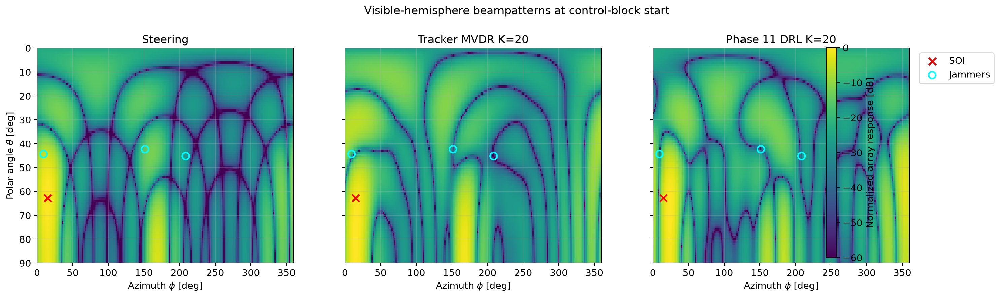

Array Model
Narrowband antenna-array simulation with configurable geometry, steering vectors and complex beamforming weights.
Trabajo Fin de Máster (TFM) · MUIT · ETSIT-UPM
A Python-based simulation framework for adaptive digital beamforming in jammer-contested electromagnetic environments, combining antenna-array modelling, interference suppression, temporal tracking and Deep Reinforcement Learning.
Project Overview
The project develops a modular simulation framework in which the complex weights of a digital antenna array are adapted to preserve reception of a known Signal of Interest (SOI) while suppressing multiple directional jammers.
Narrowband antenna-array simulation with configurable geometry, steering vectors and complex beamforming weights.
Conventional steering, deterministic interference nulling and MVDR-based solutions provide classical reference methods.
Deep Reinforcement Learning policies adapt the beamforming configuration according to the jammer scenario and its temporal evolution.
Minimal Demonstrator
The public repository contains a reduced subset of the complete research framework. The demonstration notebook reproduces a representative beamforming scenario and compares different approaches using the same physical array model.
Configure the antenna array and electromagnetic scenario.
Define the SOI and multiple directional jammers.
Compute classical and learned beamforming configurations.
Evaluate the resulting radiation patterns and SINR.

Running the Demo
The example can be executed locally using Python and the
dependencies listed in requirements.txt.
git clone https://github.com/rodriperez194/tfm-cognitive-dbf.git
cd tfm-cognitive-dbfpython -m venv .venvpython -m pip install --upgrade pip
pip install -r requirements.txt
Open demo.ipynb using Jupyter or
Visual Studio Code and execute the cells in order.
Source Code
The source code, selected trained agents and executable demonstration are available in the public GitHub repository.